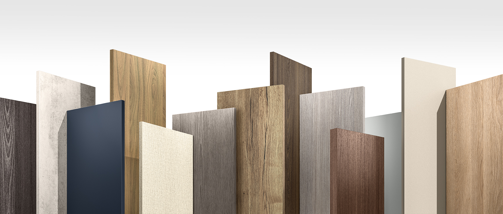

wood
Материалы для изготовления мебели
Мебель должна быть удобной, красивой и надежной. Это в основном зависит от применяемого материала.
Дерево.
Массив дерева используется с давних пор, пользуется большим спросом и рекомендован для определенного типа изделий, но этом это – дорогой и капризный материал из-за правил обработки и большой вероятности «усадки». Поэтому он для производства массовой мебели применяется достаточно редко, причем с долгим сроком изготовления. Неоспоримыми преимуществами мебели из дерева являются экологичность и неповторимый запах.
 популярные виды древесины:- ДУБ – достаточно твердая, плотная текстура и выраженная красота рисунка. Особенно часто дуб применяется при изготовлении офисной и дорогой престижной мебели.
- БЕРЕЗА – средняя плотность, без ярко выраженной текстуры. Зато это - гигроскопичный материал и рекомендован для производства детской мебели, гипоаллергенен.
- СОСНА – относительно недорогой материал, мягкая древесина. Обладает хорошей обрабатываемостью и имеет уникальное свойство в темноте казаться светлее.
Для производства мебели массового потребления используются более удобные, технологиные и доступные материалы, сочетающие красивую – по желании – текстуру дерева и невысокую цену при сохранении важных конструкционных характеристик.
МДФ
Уникальная разработка МДФ – эта древесноволокнистая плита производится путем спрессования мелких древесных опилок. Благодаря такой технологии изготовления отлично подходит для механической обработки, поэтому применяется для производства фасадов дверей, фрезерованных изделий сложной формы и резных элементов декора. Это – столешницы, фигурные ножки, дверцы кухонных гарнитуров и многое другое.
Поверхность МДФ можно тонировать «под дерево» или красить в любой цвет. Этот материал успешно заменяет массив дерева благодаря своей недорогой цене, является прочным и одновременно гибким материалом, который можно даже гнуть. Важно, что в отличии от натурального дерева, МДФ не боится воды.
ЛДСП
Древесностружечная плита или ламинированная ДСП - более жесткий, прочный и дешевый материал - применяется для изготовления корпусов, полок, стенок и каркасов мягкой мебели. Т.е. именно там, где главным требованием является прочность и не особенно важна красота поверхности. Хорошо поддается сверлению, но чувствительна к воздействию влаги и тепла.
При комбинации этих синтезированных аналогов древесных материалов можно получить красивую, удобную, недорогую, современную и прочную мебель!